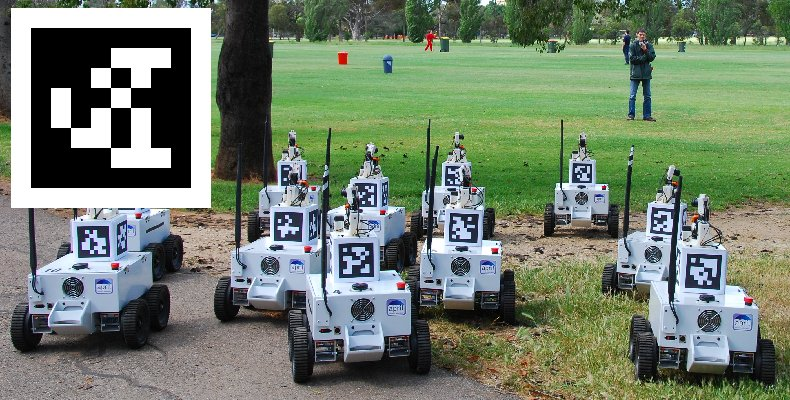
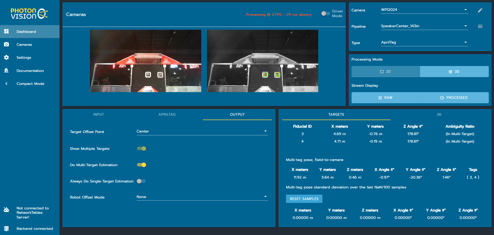

Deck 12 of 13 · FRC Java crash course
What FRC teams use in 2026, and how to choose
WPILib 2026 · Java · Command-based
Overview
A camera that sees AprilTags can tell your robot where it is on the field. This deck covers how that works, what teams use, and how to choose.
What vision does on an FRC robot.
How WPILib combines camera poses with odometry.
Limelight, PhotonVision, QuestNav and WPILib compared.
What 2026 team code uses, and a recommendation.
Deck 12 · Vision
2
AprilTags

Image: WPILib documentation, CC BY 4.0.
An ID
The black and white squares encode a number.
A known place
Each 2026 field tag has a known pose. WPILib ships the layout.
Four corners
From the corners, a calibrated camera finds its own pose.
Deck 12 · Vision
WPILib docs: What Are AprilTags?
3
What vision does
Work out the robot’s pose from AprilTags, and use it to correct odometry. The main use in 2026.
Turn until a tag sits in the middle of the image. No calibration needed.
A neural network draws a box around each FUEL it sees. Needs extra hardware.
Deck 12 · Vision
WPILib docs: What Are AprilTags?
4
Control theory
Latency compensation: each correction is applied at the moment the frame was taken, then carried forward.
odometry
estimate at t
replay
fix
Camera frame
taken at time t, arrives later
Pose from tags
where the robot was at time t
Gap at time t
vision minus the estimate then
Move part way
by a fraction K of the gap
Wheels and gyro
every 20 ms
Pose history
the last 1.5 seconds
Estimate now
getEstimatedPosition()
Deck 12 · Vision
WPILib docs: Pose Estimators
5
Control theory
Vision std dev 0.1 m
0.5 m
4 m
0
1
2
3
0
0.25
0.5
0.75
1
Estimate’s distance from the true pose (m)
Time (s)
1
The fraction K
K = odometry / (odometry + vision). With 0.02 m and 0.5 m, K is 3.8%.
2
0.5 m: several tags
14 cm left after 1 s, 2 cm after 2 s.
3
4 m: one far tag
Still 47 cm off after 3 s.
Deck 12 · Vision
WPILib docs: Pose Estimators
6
Evidence
| Option | Its library is in the repo | The robot code uses it |
|---|---|---|
| Limelight | 280 (30%): LimelightHelpers | 312 (34%) |
| PhotonVision | 432 (47%): PhotonLib | 299 (32%) |
| QuestNav | 34 (4%) | 29 (3%) |
| WPILib’s detector on the roboRIO | Built in: nothing to count | 3 (0.3%) |
| No camera code at all | Not counted | 362 (39%) |
Our count, Nov 2026, and rough: a random 1,000 public repos found by code search, 925 of them 2026 Java robot projects. It shows code, not what ran at events.
Deck 12 · Vision
7
Side by side
| Limelight 4 | PhotonVision | QuestNav | WPILib on roboRIO | |
|---|---|---|---|---|
| You buy | One camera with a computer inside | A coprocessor and USB cameras | A Meta Quest 3S, an Ethernet adapter, a mount | A USB camera |
| Prices we confirmed | $449, sold out on Nov 6 | Software free. Hardware not priced here | Headset $349.99 | No extra computer |
| It finds | Tags, and game pieces | Tags, and game pieces on some boards | Its own motion, not tags | Tags |
| Code | LimelightHelpers: one file you copy | PhotonLib vendordep | QuestNav vendordep, by URL | Built into WPILib |
| Simulation | None in its docs | Simulates the camera in Java | Needs the real headset | None we found |
WPILib’s docs warn that vision on the roboRIO can slow down your robot program.
Deck 12 · Vision
8
Limelight models
| Model | Camera sensor | Field of view | limelightvision.io, Nov 6 |
|---|---|---|---|
| Limelight 4 | Mono, global shutter, built-in IMU | 82° x 56.2° | $449, sold out |
| Limelight 3G | Mono, global shutter | 82° x 56.2° | $400, sold out |
| Limelight 3 | Color, rolling shutter | 62.5° x 48.9° | $400, sold out |
| Limelight 3A | Color, rolling shutter. Made for FTC, USB only | 54.5° x 42° | $189, sold out |
A global shutter takes the whole image at once, so tags smear less while the robot moves.
Deck 12 · Vision
9
Other options
PhotonVision publishes images for Limelight 2, 2+, 3, 3G and 4. Your code then uses PhotonLib.
A Meta Quest headset tracks its own motion with cameras and an IMU. Reset it at a known spot.
AprilTagDetector runs inside your robot program, on a USB camera. No coprocessor.
Deck 12 · Vision
10
Pose estimator
deck12/CANDriveSubsystem.java
// Replaces DifferentialDriveOdometry: the same wheel and
// gyro readings, plus poses from a camera.
1 private final DifferentialDrivePoseEstimator estimator =
1 new DifferentialDrivePoseEstimator(
1 KINEMATICS, gyro.getRotation2d(), 0.0, 0.0,
1 startingGuess());
/** Called by a camera class with a pose from tags. */
2 public void addVisionMeasurement(
2 Pose2d pose, double seconds, Matrix<N3, N1> stdDevs) {
3 estimator.addVisionMeasurement(pose, seconds, stdDevs);
}
1
Same inputs as odometry
Kinematics, gyro, both wheel distances, and a starting pose.
2
A door for cameras
Any camera class calls this. The drivetrain does not care which camera.
3
Pose, time, trust
A pose, when the frame was taken, and three standard deviations.
Deck 12 · Vision
WPILib docs: Pose Estimators
11
PhotonLib v2026.3.4
deck12/PhotonVisionCamera.java
public void periodic() {
1 for (var result : camera.getAllUnreadResults()) {
2 var est = estimator.estimateCoprocMultiTagPose(result);
if (est.isEmpty()) {
2 est = estimator.estimateLowestAmbiguityPose(result);
}
est.ifPresent(this::send);
}
}
private void send(EstimatedRobotPose est) {
Pose2d pose = est.estimatedPose.toPose2d();
3 trustFor(est, pose).ifPresent(stdDevs ->
drive.addVisionMeasurement(
4 pose, est.timestampSeconds, stdDevs));
}
1
Every new frame
All frames since the last loop, oldest first, so none are skipped.
2
All tags, then one
Multi-tag uses every visible tag. If it is empty, use the clearest single tag.
3
How much to trust it
More for many close tags, less for one far tag, or skip it.
4
When, not now
The time the frame was taken, already on the robot’s clock.
Deck 12 · Vision
12
PhotonVision web UI

Screenshot: PhotonVision documentation, CC BY 4.0. It shows a 2024 field; the steps are the same.
Calibrate, then 3D
Set Processing Mode to 3D.
Turn it on
Do Multi-Target Estimation, on the Output tab.
Check the result
A multi-tag pose table appears under Targets.
Deck 12 · Vision
13
LimelightHelpers v1.14
deck12/LimelightCamera.java
public void periodic() {
1 double yaw = drive.getPose().getRotation().getDegrees();
1 LimelightHelpers.SetRobotOrientation(
1 LIMELIGHT_NAME, yaw, 0, 0, 0, 0, 0);
2 var mt2 = LimelightHelpers
2 .getBotPoseEstimate_wpiBlue_MegaTag2(LIMELIGHT_NAME);
3 if (mt2 == null || mt2.tagCount == 0) {
return;
}
3 if (Math.abs(drive.turnRateDegreesPerSecond()) > 360) {
return;
}
4 drive.addVisionMeasurement(
4 mt2.pose, mt2.timestampSeconds,
4 VecBuilder.fill(.7, .7, 9999999));
}
1
Heading first
MegaTag2 needs the robot’s heading every loop.
2
Blue origin
Limelight says to always use the wpiBlue pose for FRC.
3
Skip bad frames
No data, no tags, or turning faster than 360° a second.
4
Into the same door
Its own timestamp, and a huge heading number.
Deck 12 · Vision
14
Simulation
deck12/PhotonVisionCamera.java
private void setUpSimulation() {
visionSim = new VisionSystemSim("main"); // a simulated field
visionSim.addAprilTags(TAG_LAYOUT); // with every 2026 AprilTag on it
// A pretend camera: 960 x 720 pixels, 90 degree view, 15 frames a second, 50 ms late.
var props = new SimCameraProperties()
.setCalibration(960, 720, Rotation2d.fromDegrees(90))
.setFPS(15)
.setAvgLatencyMs(50)
.setLatencyStdDevMs(15);
visionSim.addCamera(new PhotonCameraSim(camera, props), ROBOT_TO_CAMERA);
}
@Override
public void simulationPeriodic() {
visionSim.update(drive.truePose()); // where the robot really is, not its estimate
}
Deck 12 · Vision
15
Older tutorials
Before 2026: deprecated for removal
new PhotonPoseEstimator(layout,
PoseStrategy
.MULTI_TAG_PNP_ON_COPROCESSOR,
robotToCamera);
estimator.update(result);
2026: two arguments, then a method
new PhotonPoseEstimator(layout,
robotToCamera);
estimator
.estimateCoprocMultiTagPose(result);
Deck 12 · Vision
16
Best practice
Scale x and y trust with how many tags and how far away. Make the heading number huge, so the gyro keeps the heading.
WPILib’s docs say this for AprilTag poses. One far tag is noisy, and at full trust its noise becomes your pose.
// Standard deviations for x (m), y (m), heading (rad).
// Bigger means trust less. These start from PhotonVision's
// example. The huge heading number leaves heading to the gyro.
public static final Matrix<N3, N1> ONE_TAG_STD_DEVS =
VecBuilder.fill(4, 4, 9999999);
public static final Matrix<N3, N1> MULTI_TAG_STD_DEVS =
VecBuilder.fill(0.5, 0.5, 9999999);
Deck 12 · Vision
WPILib docs: Pose Estimators
17
Common mistake
What you see
Vision poses land away from where the robot really is, even with a good calibration.
Why it happens
REBUILT has two field layouts, welded and AndyMark. WPILib’s default and PhotonVision ship with welded.
The fix
Use the layout for the field you are on, in your code and on the coprocessor.
AprilTagFieldLayout.loadField(
AprilTagFields.k2026RebuiltAndymark);
Deck 12 · Vision
18
Common mistake
What you see
Vision corrections look right while the robot is still. While it drives, they pull the estimate backward.
Why it happens
Timer.getFPGATimestamp() was passed in place of the frame’s timestamp, so the gap is measured at the wrong moment.
The fix
Pass est.timestampSeconds from PhotonLib, or mt2.timestampSeconds from LimelightHelpers.
Deck 12 · Vision
WPILib docs: Pose Estimators
19
How to choose
yes
yes
no
no
Odometry works?
Encoders and a gyro, as in Deck 10
Can you get a Limelight 4?
Budget and stock
Limelight 4 with MegaTag2
One box: power and Ethernet. Least setup.
Fix odometry first
Vision corrects a pose. It needs one.
PhotonVision
Orange Pi 5 and an OV9281 camera
Either way: start in simulation
PhotonLib’s camera sim needs no hardware
Later: a second camera, game-piece detection, or QuestNav
Deck 12 · Vision
20
Exercise
1.
In a copy of examples/, make Robot.java create frc.robot.deck12.RobotContainer. Run WPILib: Simulate Robot Code.
2.
In AdvantageScope, drag SimPose and EstimatedPose onto Poses. The estimate starts 1 m to the side.
3.
Enable Teleoperated and drive until the camera faces a tag.
4.
In Constants, set USE_VISION to false. Run it again and drive the same way.
Done when: with vision on, EstimatedPose closes the gap while a tag is in view. With it off, the gap stays.
Deck 12 · Vision
21
Next season
| In 2026 | Changing for 2027 |
|---|---|
| roboRIO, with vision on a separate device | Systemcore, made by Limelight, with an onboard IMU |
| PhotonLib v2026.3.4 | PhotonVision has 2027 alpha releases |
| edu.wpi.first packages in vision libraries | org.wpilib packages, so each library needs a 2027 build |
All of it is alpha. Everything on the other slides is for 2026 and the roboRIO.
Deck 12 · Vision
22
Recap
Vision finds the robot’s pose from AprilTags, and WPILib’s pose estimator uses it to correct odometry.
Standard deviations set how far each pose moves the estimate. Timestamps place it in time.
In 2026 team code, Limelight and PhotonVision are about even, and 39% have no camera code.
For a young team: odometry first, then a Limelight 4 or PhotonVision, learning in simulation first.
Deck 12 · Vision
23
Reference
PhotonVision
Limelight
QuestNav
WPILib pose estimators
Deck 12 · Vision
24